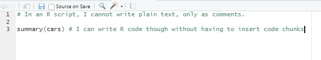
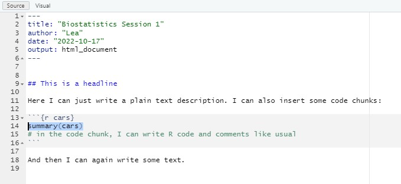

code.sourceCode {
font-size: 1.4em;
}13 R Markdown
Julius-Maximilians-University Würzburg
Course: “Biostatistics”
Translational Neuroscience
Course: “Biostatistics”
Translational Neuroscience
R Markdown
library(tidyverse)R scripts (.R) are a good way to save your code. However, you’d better heavily comment in your scripts, so that future you (and potentially collaborators) know what happens where in your script.
An extension is an R Markdown file (.Rmd). This is also a sort of script, but the main focus is on writing text (like in a word processor) and mix it with code chunks, in which you can write your R code. R Markdown is the “language” you use to write in these files, which is a variety of the Markdown language.
The advantage of R Markdown files, in comparison to Word or LaTeX files, is that they increase reproducibility of your statistical results. For example, you can (and will) write whole reports in R Markdown.
A newer variant is called quarto, which works very similar to R Markdown (but is more flexible). These slides are written with it.
Comparison: R vs. R Markdown 1

. . .

Comparison: R vs. R Markdown 2

Your First R Markdown Script
Open a new
.Rmdfile, change/insert the title and author.Check out the content of it. What different parts do you see?
. . .
- Switch between “Source” and “Visual” in the top left. What changes? What is “Visual”?
. . .
Delete and add some of the text on the white background. Change the Header (indicated by
##) to “About me” and write something about yourself underneath.In the grey boxes (“code chunks”), add some code. Try to find out how you can add a new code chunk.
. . .
Save the file with a sensible name.
What happens when you click on “Knit” (top of Script pane)?
- hint: The green C with the + on the top right will do so (or using “insert” in the visual view)
- Click on the little arrow next to knit and select “Knit to PDF”
- insert inline code
R Markdown Advantages
There are many useful things you can do with R Markdown (adding different headers, adding inline code, knitting as a PDF, adding pictures or tables…). You can also decide whether the code chunks should be visible in the output, etc.
For further information, check out the R Markdown cheatsheet: https://www.rstudio.com/wp-content/uploads/2015/02/rmarkdown-cheatsheet.pdf
Options for your code chunks:

Examples:
```{r, eval=FALSE}
#your code here
```Code Chunk Options
Options for your code chunks:
You can change these default values for code chunks for the rest of your document:
```{r, include=FALSE}
knitr::opts_chunk$set(
comment = "#>", echo = FALSE, fig.width = 6
)
```Fore more information, see https://bookdown.org/yihui/rmarkdown-cookbook/chunk-options.html
From an R script to R Markdown
Previously, we have just worked with .R scripts. If you have a full R script with your entire analysis (or even several scripts), how do you include them in an R Markdown file?
. . .
- Copy all code into one giant code chunk:
```{r}
#copy all code here
```You can break this code chunk apart into smaller ones by copying this into a new line of the code chunk:
```
```{r}. . .
2. “Import” the R script and run it with the source function:
```{r message=FALSE, warning=FALSE}
source("analysis.R", #your R script here (same folder as your project)
local = knitr::knit_global())
```You can now use all variables that you have created in your R script.
Your Second R Markdown Script
- Use one of the two methods described before to include any R script from a previous R code session in your R Markdown document.
- Output the content of any variable of your R script and include it as inline code in some text (Cheat Sheet).
. . .
```{r}
data = tibble(rt = rnorm(n=100, mean=.5, sd=.2))
```
We observed an average reaction time of `r data %>% pull(rt) %>% mean() %>% signif(digits=3)` seconds.data = tibble(rt = rnorm(n=100, mean=.5, sd=.2))We observed an average reaction time of 0.502 seconds.
. . .
```{r}
data = tibble(a = rnorm(n=100, mean=.5, sd=.2), b = rnorm(n=100, mean=.4, sd=.2))
mytest = with(data, t.test(a, b, paired=T))
#mytest %>% apa::t_apa()
```
We performed a paired *t*-test and found a significant difference between both conditions
(`r mytest %>% apa::t_apa(print=F, format="rmarkdown")`). In condition A, reaction times were higher
(*M* = `r data %>% pull(a) %>% mean() %>% signif(3)` s, *SD* = `r data %>% pull(a) %>% sd() %>% signif(3)` s)
compared to condition B (*M* = `r data %>% pull(b) %>% mean() %>% signif(3)` s, *SD* = `r data %>% pull(b) %>% sd() %>% signif(3)` s).data = tibble(a = rnorm(n=100, mean=.5, sd=.2), b = rnorm(n=100, mean=.4, sd=.2))
mytest = with(data, t.test(a, b, paired=T))
#mytest %>% apa::t_apa()We performed a paired t-test and found a significant difference between both conditions (t(99) = 2.83, p = .006, d = 0.28). In condition A, reaction times were higher (M = 0.48 s, SD = 0.198 s) compared to condition B (M = 0.405 s, SD = 0.166 s).
. . .
3. Knit the document and open the output with a double click.
Thanks
Learning objectives:
- Know how you can create an R Markdown report from your R script(s)
Next session:
Troubleshooting your report